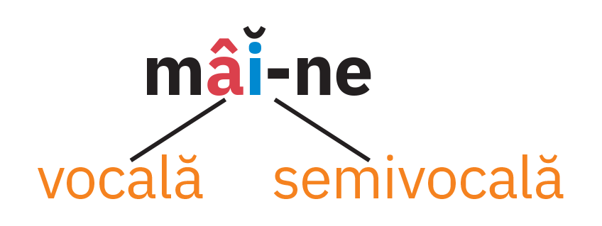

U1
Acasă, în familie, printre cărți
Limba română
- Cum o cheamă pe fetița din ilustrația alăturată? Precizează sunetele care alcătuiesc prenumele ei
- Din ce sunete este alcătuit numele și prenumele tău? Dar al colegului tău/colegei tale de bancă?

Diftongul
- Ce fel de sunete transcriu literele colorate din cea de-a doua silabă a cuvântului păianjen? pă-ian-jen
- Unde se află vocala în raport cu semivocala în cuvântul vai? Dar în a doua silabă a cuvântului paianjen?
- Care este vocala și care este semivocala din cuvântul biet?
- Precizează dacă în cuvântul geam există un grup alcătuit dintr-o semivocală și o vocală sau doar o vocală.
- Câte sunete se aud atunci cand pronunți verbul e? Ce fel de sunete sunt acestea?
Diftongul este grupul de sunete alcătuit dintr-o vocală și o semivocală, pronunțate în aceeași silabă.
Diftongul este urcător sau ascendent când este alcătuit dintr-o semivocală și o vocală, aflate în această succesiune, ca în cuvântul floa-re.
Diftongul este coborâtor sau descendent când este alcătuit dintr-o vocală și o semivocală, aflate în această succesiune, ca în cuvântul mâi-ne.
Când grupurile de litere ce, ci, ge, gi, che, chi, ghe, ghi se află înaintea unei vocale, nu formează, de obicei, diftongi. De exemplu, în cuvântul ceas există consoana [c], vocala [a] și consoana [s], iar în cuvântul gheață, prima silabă este alcatuită din consoana [g'] și vocala [a].
În unele forme ale verbului a fi (este, e, eram etc.) și în pronumele personale el, ele, litera inițială e se pronunță cu diftongul [ie].
Triftongul
- Precizează din câte silabe este alcătuit cuvântul tigroaică și felul sunetelor din care este alcatuită fiecare dintre acestea.
- Desparte în silabe cuvântul leoaică. Din ce fel de sunete este alcătuită a doua silabă?
- Notează, în caiet, câte un cuvânt care să conțină, într-o silabă, următoarele grupuri de sunete: eoa și iai.
- Câte sunete auzi atunci când pronunți pronumele personal eu? Ce fel de sunete sunt fiecare dintre acestea?
- Precizează din câte silabe este alcătuit grupul de cuvinte te-ai și ce tipuri de sunete (vocale, semivocale, consoane) intra în componența sa.
Limba română
Triftongul este grupul de sunete alcătuit dintr-o vocală și două semivocale pronunțate în aceeași silabă.

Grupurile de litere ce, ci, ge, gi, che, chi, ghe, ghi, atunci când se află înaintea unei vocale. nu formează, de obicei, triftongi. De exemplu, în a doua silabă a cuvântului strângeau (-geau) există consona [g], vocala [a] și semivocala [u], ceea ce înseamnă că grupul [au] alcătuiește un diftong.
Pronumele personale eu și ei se pronunță cu triftong, [ieu], respectiv [iei].
Pentru identificarea diftongilor și triftongilor este necesară despărțirea în silabe a cuvintelor sau a grupurilor de cuvinte. Uneori, în aceeași silabă intră cuvinte diferite, legate prin cratimă. Astfel, cuvintele mi-a (mi-a adus) pronunțate împreuna formează un diftong, iar cuvintele ne-au (ne-au adus) pronuntațe împreuna formează un triftong.
Hiatul
- Ce sunete transcriu literele marcate colorat in cuvantul uriaș, vocale sau semivocale?u-ri-aș
- Precizează ce constați în ceea ce privește poziția lor.
Hiatul apare între două vocale alăturate ale aceluiași cuvânt, pronunțate în silabe diferite, ca în cuvântul caisă.

- Transcrie următoarele cuvinte în caiet. Desparte în silabe cuvintele plurisilabice și încercuiește diftongii, punând semnul specific deasupra fiecărei semivocale.
caifiergutuiiulieleacmoarănoroipâinepiațărâu - Precizează care dintre diftongii identificați la exercițiul 1 sunt ascendenți și care sunt descendenți.
- Desparte în silabe cuvintele: aripioară, lăcrămioară, leoarcă, maiou, vreau, zgripțuroiacă. Încercuiește triftongii și pune deasupra fiecărei semivocale semnul specific.
- Identifică vocalele în hiat din cuvintele: arie, câmpie, ființă, folie, liliac, poet, radio, real, vietate.
- Transcrie tabelul de mai jos în caiet și completează-l corespunzător folosind cuvintele din seria dată.
aerbăiatcuiercleioasedădeauiubirejuniorpleoapăpoetproiectsuiauzoologCuvinte care conțin diftong Cuvinte care conțin triftong Cuvinte care conțin vocale în hiat - Ce fel de diftongi sunt cei identificați la exercițiul anterior?
-
Precizează diftongii și triftongii din versurile de mai jos.
"Aruncarea suliței
Cât e lungul uliței.
Cine o aruncă? Vreau,
Vreau să știu ce să i-o iau.
După vrăbii mâța Miau
Da cu unghii: sulițe
Lungi cât două ulițe."